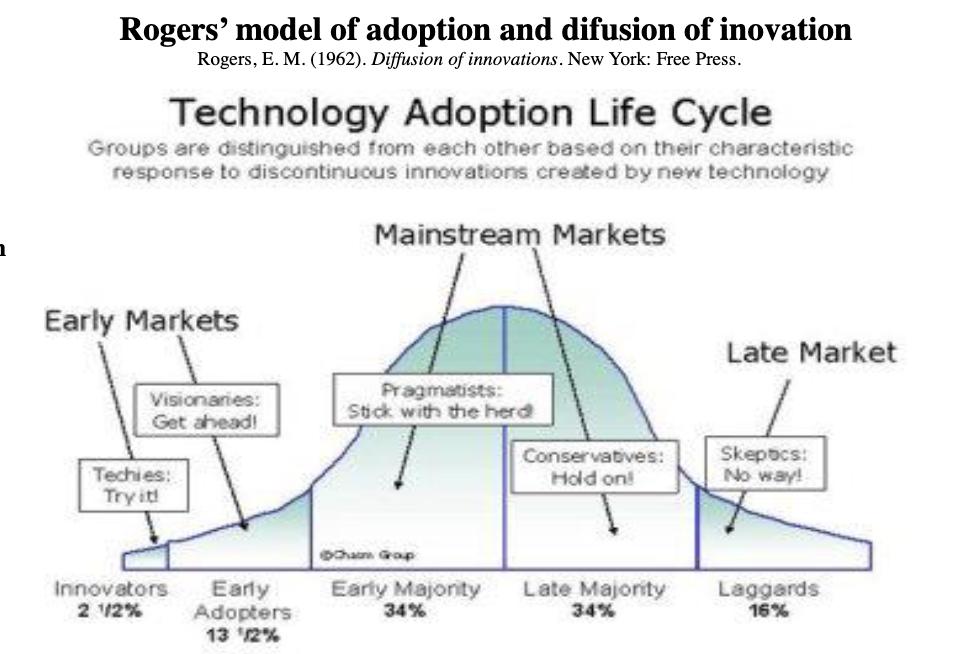
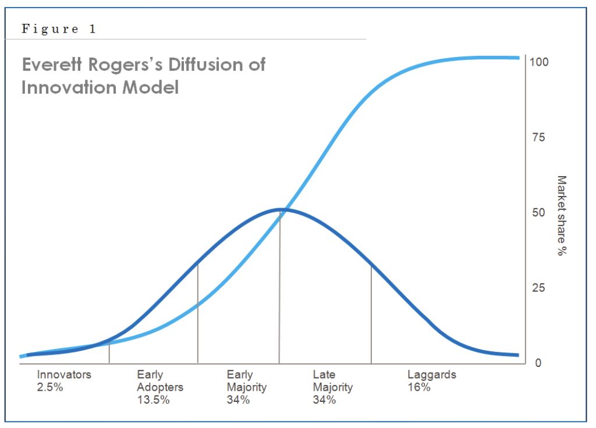
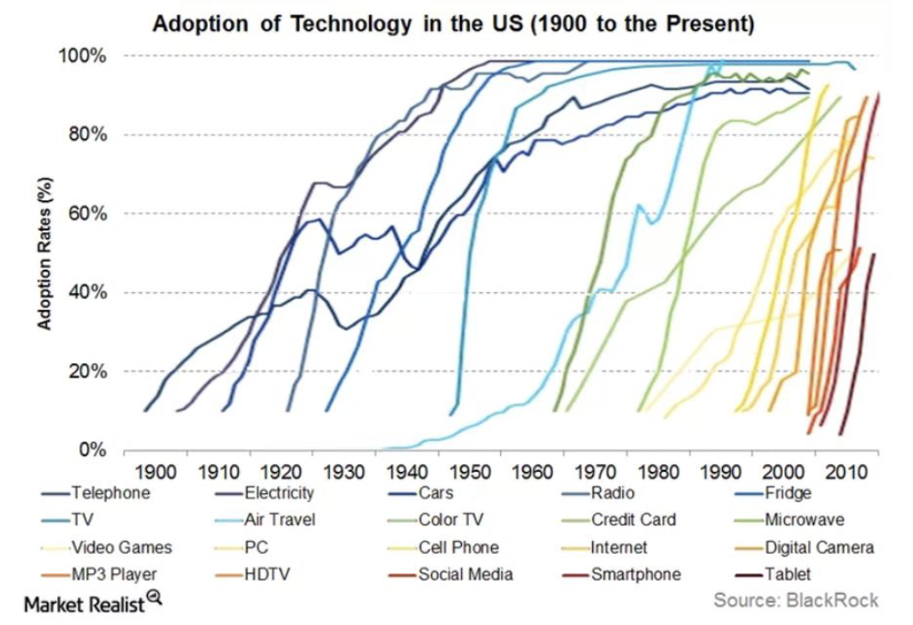
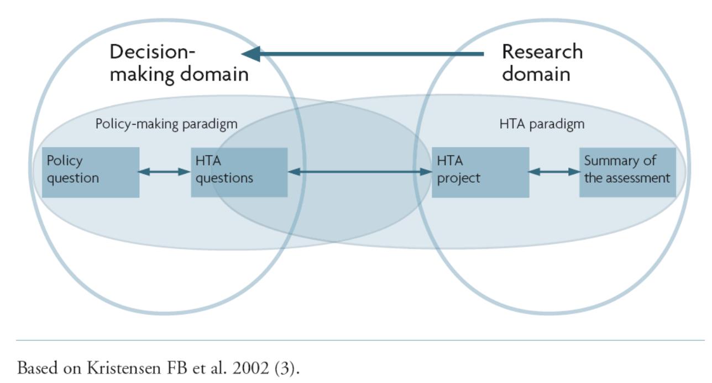
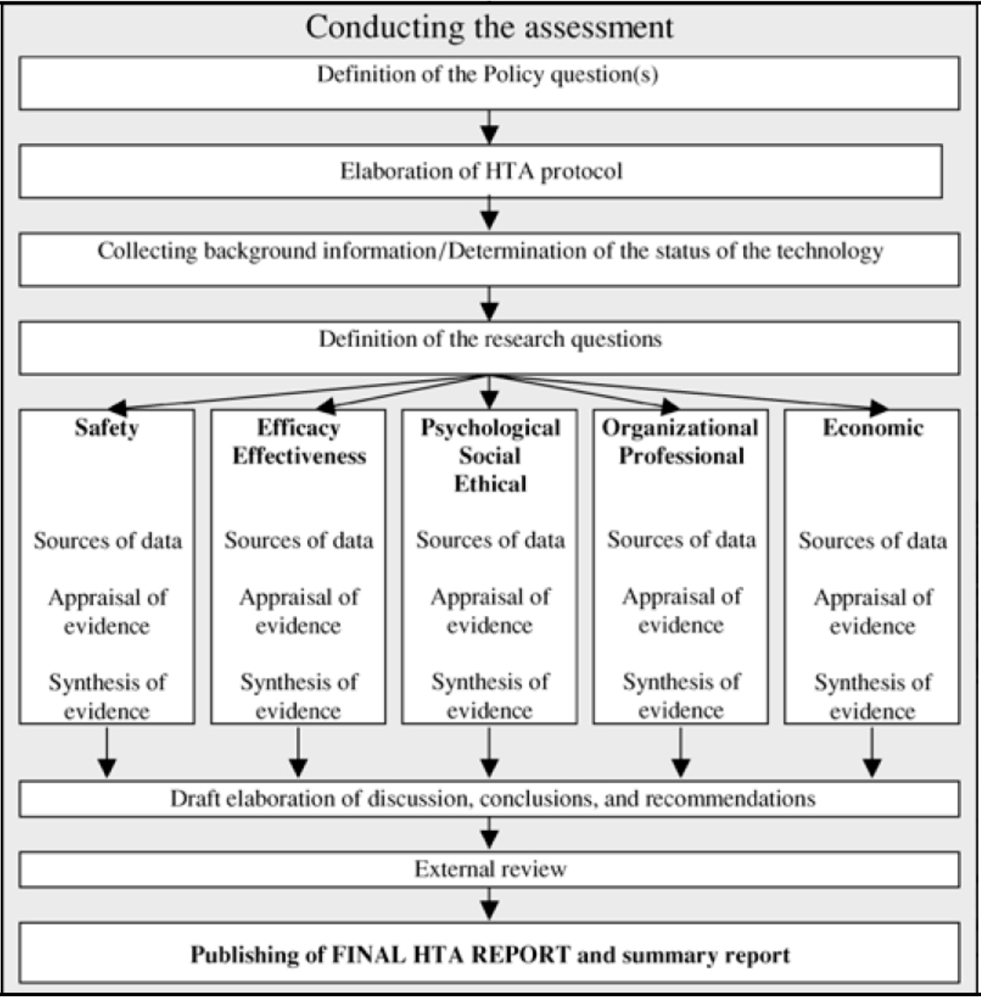
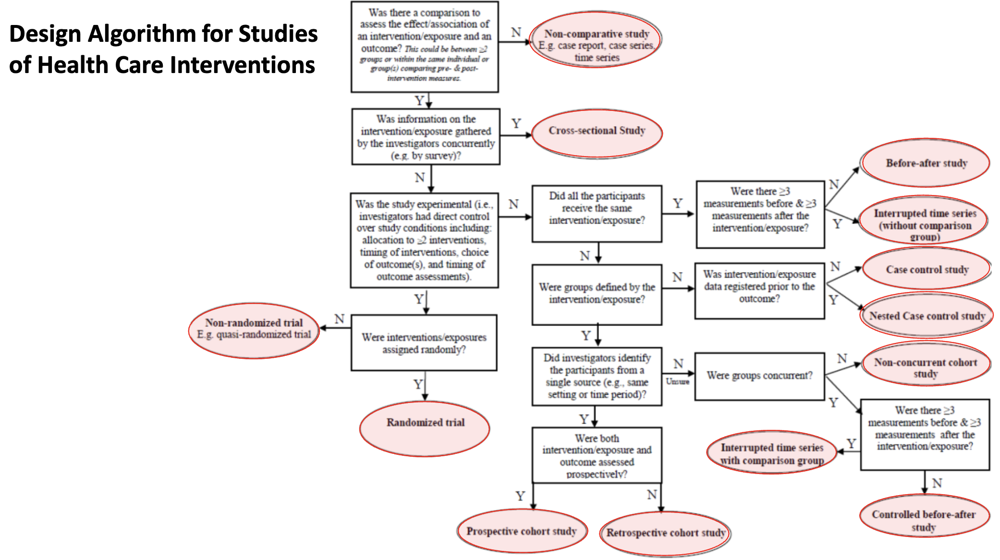
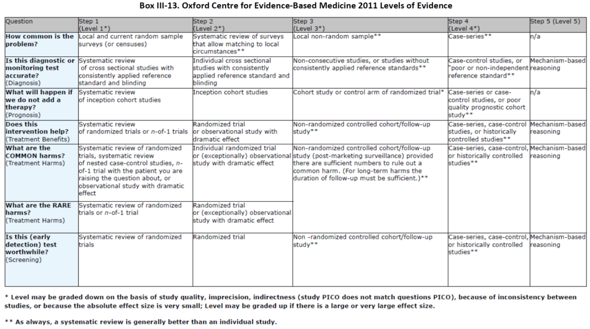

Lesson 02 - Health Technology Assessment – HTA#
Introduction#
Technology: practical application of scientific knowledge used to solve a concrete problem
Practical applications of scientific knowledge
Examples:
Drugs
Medical devices
Procedures (surgical, screening, prevention, intervention, etc.)
Diagnostic technologies
Support and information management systems (information systems, electronic health recods, decision support systems, etc.)
Administrative and management systems
Organization and structuring models and systems
Why it is and increasingly will be important?
Advances in science and engineering
Intellectual property, especially patent protection
Aging populations
Increasing prevalence of chronic diseases
Emerging pathogens and other disease threats
Changes in payers & providers managerial structures
Financial incentives of technology companies, clinicians, hospitals, and others
Public demand driven by direct-to-consumer advertising, mass media reports, social media, and consumer awareness and advocacy
Off-label use of drugs, biologics, and devices
“Cascade” effects of unnecessary tests, unexpected results, or patient or physician anxiety
Clinician specialty training at academic medical centres
Provider competition to offer state-of-the-art technology
Malpractice avoidance
Strong or growing economies
Health technology: practical application of knowledge to improve or maintain individual and population health
Applications:
Prevention
Early detection
Diagnosis
Treatment
Management
Follow-up
A large and heterogeneous group of technologies including drugs, medical devices, procedures (surgical, screening, prevention, intervention, etc.), diagnostics, support and information management systems (information systems, electronic health records, decision support systems, etc.), administrative and management systems, organization models and systems
The development and application of healthcare technologies was the single main factor explaining the fast and accelerating progress of medicine, healthcare and the health sciences in general; and also the main factor explaining the significant improvements in terms of population health and outcomes during the last century, and particularly during the last decades.
Fundamental characteristics of technology#
(Physical) Nature, Purpose and Stage of Diffusion
(Physical) Nature#
Drugs: e.g., aspirin, beta-blockers, antibiotics, HMG-CoA reductase inhibitors (“statins”)
Biologics: vaccines, blood products, cellular and gene therapies - Devices, equipment and supplies: e.g., cardiac pacemakers, CT scanners, surgical gloves, diagnostic test kits
Medical and surgical procedures: e.g., psychotherapy, nutrition counseling, coronary angiography, gall bladder removal
Support systems: e.g., electronic patient record systems, telemedicine systems, drug formularies, blood banks, clinical laboratories
Organizational and managerial systems: e.g., prospective payment using diagnosis-related groups, alternative health care delivery configurations, clinical pathways, total quality management programs
Purpose#
Prevention: protect against disease by preventing it from occurring, reducing the risk of its occurrence, or limiting its extent or sequelae (e.g., immunization, hospital infection control program, fluoridated water supply)
Screening: detect a disease, abnormality, or associated risk factors in asymptomatic people (e.g., Pap smear, tuberculin test, mammography, serum cholesterol testing)
Diagnosis: identify the cause and nature or extent of disease in a person with clinical signs or symptoms (e.g., electrocardiogram, serological test for typhoid, x-ray for possible broken bone)
Treatment: designed to improve or maintain health status, avoid further deterioration, or provide palliation (e.g., antiviral therapy, coronary artery bypass graft surgery, psychotherapy, drugs for cancer pain)
Rehabilitation: restore, maintain or improve a physically or mentally disabled person’s function and well-being (e.g., exercise program for post-stroke patients, assistive device for severe speech impairment, incontinence aid)
Stage of Diffusion#
Future: in a conceptual stage, anticipated, or in the earliest stages of development
Experimental: undergoing bench or laboratory testing using animals or other models
Investigational: undergoing initial clinical (i.e., in humans) evaluation for a particular condition or indication
Established: considered by providers to be a standard approach to a particular condition or indication and diffused into general use
Obsolete/outmoded/abandoned: superseded by other technologies or demonstrated to be ineffective or harmful
Technology Adoption#

“Be not the first by whom the new is tried, nor the last to lay the old aside“ Alexander Pope


Roger’s model of adoption and diffusion of innovations#
Rogers, E. M. (1962). Diffusion of innovations. New York: Free Press
Five stages in the Decision Innovation Process
Knowledge
Persuasion
Decision
Reject
Accept
Implementation
Confirmation
Technology assessment and health technology assessment#
Definition:
Is a multidisciplinary and transdisciplinary field of scientific research assessing, exploring and reporting the properties, characteristics, consequences and impacts of health technologies, aiming to support and inform decision-making processes in health and medicine at all levels, from patients to national health policy.
Aims:
Adequately analyse, synthesise and report on the best available scientific knowledge and experience regarding the properties and impacts (medical, social, economic, ethical, regulatory and legal) of health technologies using systematic, transparent, robust and unbiased methods and approaches.
Ultimately, it aims to support and inform decision making processes and health policy regarding the safe, effective, efficient and patient-centred use of technology to maximize value and health gains.
Orientation:
It is not necessarily centred on a particular technology
It may have different orientations
Technology-oriented assessments: Intended to determine the characteristics or impacts of particular technologies. For example, a government agency may want to determine the clinical, economic, social, professional, or other impacts of cochlear implants, cervical cancer screening, PET scanners, or widespread adoption of electronic health record systems.
Problem-oriented assessments: Focus on solutions or strategies for managing a particular disease, condition, or other problem for which alternative or complementary technologies might be used. For example, clinicians and other providers concerned with the problem of diagnosis of dementia may call for HTA to inform the development of clinical practice guidelines involving some combination or sequence of clinical history, neurological examination, and diagnostic imaging using various modalities.
Project-oriented assessments: Focus on a local placement or use of a technology in a particular institution, program, or other designated project. For example, this may arise when a hospital must decide whether or not to purchase a PET scanner, considering the facilities, personnel, and other resources needed to install and operate a PET scanner; the hospital’s financial status; local market potential for PET services; competitive factors; etc.
Timing:
What is the right time to perform an HTA?
Early on the process or later on the process?
“It is always too early until, unfortunately, it is suddenly too late!” (Buxton, 1987)
The problem of the “moving target”
Partial and rapid HTAs
Properties, attributes and impacts to be assessed
Technical properties
Safety
Efficacy and/or Effectiveness
Economic attributes or impacts
Organizational and professional impact
Ethical, social, legal and/or political impact
Agencies and organizations conducting HTA
Regulatory agencies
Government and private sector payers
Managed care organizations
Health professions organizations
Standards setting organizations
Hospitals and health care networks
Group purchasing organizations
Patient and consumer organizations
Government policy research agencies
Private sector assessment/policy research organizations
Academic health centers
Biomedical research agencies
Health product companies
Venture capital groups and other investors
Reference agencies and organizations of HTA:
HTA International [www.htai.org]
International Network of Agencies for Health Technology Assessment (INAHTA) [www.inahta.org]
European network for Health Technology Assessment – EUnetHTA [www.eunethta.net]
National Institute for Clinical Excellence (NICE) [www.nice.org.uk] and [www.hta.nhsweb.nhs.uk]
Agency for Healthcare Research and Quality (AHRQ) [www.ahrq.gov]
Centre for Applied Health Services Research and Technology Assessment (CAST) [www.sdu.dk/Om_SDU/Institutter_centre/CAST.aspx?sc_lang=en]
AcademyHealth [www.academyhealth.org]
Cochrane Collaboration [www.cochrane.org]
International Health Economics Association [www.healtheconomics.org]
International Society for Pharmacoeconomics and Outcomes Research [www.ispor.org]
Society for Medical Decision Making [www.smdm.org]
Operational phases in HTA:
Identify assessment topics
Specify the assessment problem
Determine locus of assessment
Retrieve evidence
Collect new primary data (as appropriate)
Appraise/interpret evidence
Integrate/synthesize evidence
Formulate findings and recommendations
Disseminate findings and recommendations
Monitor impact
Operational phases in HTA in more detail:
Submission of an assessment request/identification of an assessment need
Prioritization
Commissioning
Conducting the assessment
Definition of policy question(s)
Elaboration of HTA protocol
Collecting background information/determination of the status of the technology
Definition of the research questions
Sources of data, appraisal of evidence, and synthesis of evidence for each of:
Safety
Efficacy/effectiveness
Psychological, social, ethical
Organizational, professional
Economic
Draft elaboration of discussion, conclusions, and recommendations
External review
Publishing of final HTA report and summary report
Dissemination
Use of HTA
Update of the HTA

The development and application of technologies is associated with many issues and areas of discussion, uncertainty and controversy
Weighting Benefits vs. Risks and Harms
Weighting Benefits vs. Costs
Novelty vs. Objective Outcomes
Market and Commercial Forces vs. Objective Assessments
Technological complexity vs. Technological necessity
Stakeholder:
Research, innovation and development centres
Technology producers
Private and public funding agencies
Healthcare funding entities
Healthcare systems and healthcare providers
Health authorities and regulatory agencies
Healthcare professionals
Patients
Society
Different intertwined stakeholders with…
Different perspectives, aims and objectives
Different time horizons
Potential conflicts and conflict of interests
Need for compromise, balance, equity and rationality
Technology Assessment
The origins of Technology Assessment
The term “technology assessment” was introduced in 1965 during deliberations of the Committee on Science and Astronautics of the US House of Representatives. Congressman Emilio Daddario emphasized that the purpose of TA was to serve policymaking:
[T]echnical information needed by policymakers is frequently not available, or not in the right form. A policymaker cannot judge the merits or consequences of a technological program within a strictly technical context. He has to consider social, economic, and legal implications of any course of action (US Congress, House of Representatives 1967).
Technology assessment would aid the Congress to become more effective in assuring that broad public as well as private interests are fully considered while enabling technology to make the maximum contribution to our society’s welfare (National Academy of Engineering 1969).
Definitions:
Technology assessment (TA) is a category of policy studies, intended to provide decision makers with information about the possible impacts and consequences of a new technology or a significant change in an old technology. It is concerned with both direct and indirect or secondary consequences, both benefits and disbenefits, and with mapping the uncertainties involved in any government or private use or transfer of a technology. TA provides decision makers with an ordered set of analyzed policy options, and an understanding of their implications for the economy, the environment, and the social, political, and legal processes and institutions of society (Coates 1992).
Technology assessment is a form of policy research that examines short- and long-term social consequences (for example, societal, economic, ethical, legal) of the application of technology. The goal of technology assessment is to provide policy-makers with information on policy alternatives (Banta 1993).
We shall use the term assessment of a medical technology to denote any process of examining and reporting properties of a medical technology used in health care, such as safety, efficacy, feasibility, and indications for use, cost, and cost-effectiveness, as well as social, economic, and ethical consequences, whether intended or unintended (Institute of Medicine 1985).
[HTA] is a multidisciplinary field of policy analysis. It studies the medical, social, ethical, and economic implications of development, diffusion, and use of health technology (International Network of Agencies for Health Technology Assessment 2002).
Properties, attributes and impacts assessed in HTA#
Properties, attributes and impacts to be assessed
Technical properties
Safety
Efficacy and/or Effectiveness
Economic attributes or impacts
Psychological, social and ethical impact (not in the original list but then described)
Organizational and professional impact
Ethical, social, legal and/or political impact
Technical properties#
Nature, purpose and stage of diffusion
Description and technical characteristics of technology
Presentation and instructions for use
Clinical indications
Safety#
Unintended current or future risks
Adverse reactions and adverse events
Morbidity and disability associated with the technology
Mortality associated with the technology
Efficacy and/or Effectiveness#
Mortality and Survival
Morbidity
Disability
Quality of life
Quality adjusted life years (QALYs)
Other patient reported outcome measures (PROMs)
Efficacy |
Effectiveness |
Source |
|---|---|---|
The ability of a particular medical action in altering the natural history of a particular disease for the better under ideal conditions. |
The ability of a particular medical action in altering the natural history of a particular disease for the better under actual conditions of practice and use |
Cochrane (9) |
The probability of benefit to individuals in a defined population from a medical technology applied for a given medical problem under ideal circumstances of use. |
The benefit of a technology under average conditions of use |
U.S. Congress (59) |
Maximum achievable benefit Can it work? Does the maneuver, procedure, or service do more good than harm to people who fully comply with the associated recommendations or treatment? |
Achieved benefit Does it work? Does the maneuver, procedure, or service do more good than harm to those people to whom it is offered? |
Williamson (61) Sackett (54) |
What works under carefully controlled conditions, such as RCTs |
What works in day-to-day clinical practice |
Rettig (51) |
Level |
Typical measures |
|---|---|
Technical efficacy |
Physical parameters describing technical performance of the test (e.g., image quality) |
Diagnostic accuracy efficacy |
- Sensitivity (% of positives among ill) |
Diagnostic thinking efficacy/effectiveness |
- Post-test odds/probability compared to pre-test odds/probability in target population |
Therapeutic effectiveness |
- % of cases in which test is judged “helpful” in planning therapy |
Health-related effectiveness (patient outcomes) |
- Mortality/morbidity avoided with test |
Economic impact#
Costs and changes in costs
Economic Evaluation
Partial Economic Evaluations – Cost analysis
Full Economic Evaluations
Cost-minimization analysis
Cost-Benefit analysis
Cost-Effectiveness analysis
Cost-Utility analysis
Prioritization, equity and distributive justice
Organizational and professional impact#
Health services utilization
Changes in settings and location of treatment and follow up
Changes in length of stay
Changes in human an material resources
Organizational changes
Education, training and updating needs
Legal and political impact#
Legal framework
Regulatory marketing authorisation process
Regulatory reimbursement process
Social and media impact
Prioritization of investment, health policy and health equity
Summary#

Methods in HTA#
Methods based on primary data#
Primary data methods involve collection of original data, ranging from more scientifically rigorous approaches for determining the causal effect of health technologies, such as randomized controlled trials (RCTs), to less rigorous ones, such as case series.
These study designs can be described and categorized based on multiple attributes or dimensions:
Experimental studies
Quasi-experimental studies
Observational studies


Guidelines for Reporting and Critically Appraising Biomedical Research#
AMSTAR (Assessment of Multiple Systematic Reviews) (Shea 2009)
CHEERS (Consolidated Health Economic Evaluation Reporting Standards) (Husereau 2013)
CONSORT (Consolidated Standards of Reporting Trials) (Turner 2012)
GRACE (Good ReseArch for Comparative Effectiveness) (Dreyer 2014)
MOOSE (Meta-analysis of Observational Studies in Epidemiology) (Stroup 2000)
PRISMA (Preferred Reporting Items for Systematic Reviews and Meta-Analyses) (Moher 2009)
QUOROM (Quality Of Reporting Of Meta-analyses) (Moher 1999)
STARD (Standards for Reporting of Diagnostic Accuracy) (Bossuyt 2003)
STROBE (Strengthening the Reporting of OBservational Studies in Epidemiology) (von Elm 2008)
TREND (Transparent Reporting of Evaluations with Nonrandomized Designs) (Des Jarlais 2004)
EQUATOR NETWORK (http://www.equator-network.org/reporting-guidelines/)
Evidence Synthesis Methods#
Evidence synthesis methods involve combining data or information from existing sources, including from primary data studies.
These can range from quantitative, structured approaches such as meta-analyses or systematic literature reviews to informal, unstructured literature reviews. Having considered the merits of individual studies, an assessment group must then integrate, synthesize, or consolidate the available relevant findings.
For many topics in HTA, there is no single definitive primary study, e.g., that settles whether one technology is better than another for a particular clinical situation. Even where definitive primary studies exist, findings from them may be combined or considered in broader social and economic contexts in order to help inform policies.
Methods used to combine or integrate data from primary sources include the following:
Systematic literature review
Meta-analysis
Modelling (e.g., decision trees, state-transition models, infectious disease models)
Group judgment (“consensus development”)
Unstructured literature review
Expert opinion
Decision Analysis and Modelling Methods#
Quantitative modelling is used to evaluate the clinical and economic effects of health care interventions.
Models are used to represent (or simulate) health care processes or decisions and their impacts under conditions of uncertainty.
These include:
Decision trees
Influence diagrams
Bayesian/Belief Networks
Markov models
Probabilistic sensitivity analysis
Economic Evaluation Methods#
Partial Economic Evaluation – Cost analysis
Full Economic Evaluations
Cost-minimization analysis
Cost-Benefit analysis
Cost-Effectiveness analysis
Cost-Utility analysis
Perspectives |
Types of costs |
Examples |
|---|---|---|
Healthcare payer / Hospital |
Direct costs |
Healthcare staff, medicine, tests, capital costs (equipment and buildings), inpatient stay (hotel), outpatient visits, overhead costs (e.g., food, light, heat), possibly research, and education |
Ambulatory care |
Direct costs |
Visits with general practitioner, ambulatory specialist, physiotherapist, etc., prescription drugs (the share paid by the healthcare payer), screening programs |
Societal perspective |
Direct costs (possibly in other sectors) |
Rehabilitation, home care and nursing care at home, social arrangements |
Direct costs (for the patient and family) |
User payment (medicine, dentist), cost for traveling, time costs due to patient’s time used for the treatment, family or friends’ (unpaid) use of time of the patient |
|
Lost production in society |
The patient’s temporary absence from work due to illness, reduced working capacity due to illness and disablement, or lost production due to an early death |
|
Future healthcare costs |
Future unrelated healthcare costs caused by curing the patient with the present treatment |
Type of economic analysis |
When should the specific type of analysis be chosen? |
|---|---|
Cost-minimization analysis |
If the compared technologies are equally effective, then it is only necessary to collect data about costs |
Cost-effectiveness analysis |
If the effectiveness of the compared technologies are different (e.g., the difference in costs have to be weighted against the difference in effectiveness) |
Cost-utility analysis |
If health-related quality of life is an important health outcome |
Cost-benefit analysis |
If non-health effects also are of importance (e.g., the treatment process itself, utility of information) |
Consensus Development Methods#
In various forms, group judgment or consensus development is used to set standards, make regulatory recommendations and decisions, make payment recommendations and policies, make technology acquisition decisions, formulate practice guidelines, define the state-of-the-art, and other purposes.
The term “consensus development” can refer to particular group processes or techniques that generally are intended to derive best estimates of parameters or general (or unanimous) agreement on a set of findings or recommendations.
In contrast to the quantitative synthesis methods, consensus development is generally qualitative in nature.
It may be unstructured and informal, or it may involve formal group methods such as the nominal group, focus group and Delphi techniques (Fink 1984; Gallagher 1993; Jairath 1994).
Although these processes typically involve face-to-face interaction, some consensus development efforts combine remote, iterative interaction of panellists (as in the formal Delphi technique) with face-to-face meetings; video and web conferencing and related telecommunications approaches also are used.
In HTA, consensus development is not used as the sole approach to deriving findings or recommendations, but rather as supported by systematic reviews and other analyses and data.
Virtually all HTA efforts involve some form of consensus development at some juncture, including one or more of three main steps of HTA: interpret evidence, integrate evidence, and formulate findings and recommendations.
Consensus development also can be used for ranking, such as to set assessment priorities, and for rating, such as drawing on available evidence and expert opinion to develop practice guidelines.
Ethical Analysis#
Ethical, legal, and social considerations arise in HTA in the form of normative concepts (e.g., valuation of human life); choices about how and when to use technologies; research and the advancement of knowledge; resource allocation; and the integrity of HTA processes themselves (Heitman 1998).
The origins of technology assessment called for the field to support policymakers’ broader considerations of technological impacts, such as the “social, economic, and legal implications of any course of action” (US Congress, House of Representatives, 1967) and the “short- and long-term social consequences (for example, societal, economic, ethical, legal) of the application of technology” (Banta 1993).
Methods for assessing ethical, legal, and social implications of health technology have been underdeveloped relative to other methods in HTA, although there has been increased attention in recent years to developing frameworks and other guidance for these analyses (Duthie 2011; Potter 2008).
Method |
Description |
|---|---|
Casuistry |
Solves morally challenging situations by comparing them with relevant and similar cases where an undisputed solution exists |
Coherence analysis |
Tests the consistency of ethical argumentation, values or theories on different levels, with an ideal goal of a logically coherent set of arguments |
Principilism |
Approaches ethical problems by addressing basic ethical principles, rooted in society’s common morality |
Interactive, participatory HTA approaches |
Involves different stakeholders in a real discourse, to reduce bias and improve the validity and applicability of the HTA |
Social shaping of technology |
Addresses the interaction between society and technology and emphasizes how to shape technology in the best ways to benefit people |
Wide reflective equilibrium |
Aims at a coherent conclusion by a process of reflective mutual adjustment among general principles and particular judgements |